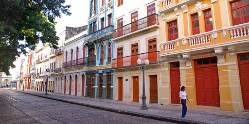

Parque de Esculturas de Francisco Brennand
O Parque de Esculturas de Francisco Brennand é um dos lugares turísticos mais visitados em Recife, nele existem várias eculturas do artista plástico brasileiro Francisco de Paula Coimbra de Almeida Brennand, ou simplesmente Francisco Brennand, natural de Recife-PE e falecido em 19 de dezembro de 2019. O artista ficou bastante conhecido por seu trabalho principalmente com a utilização de cerâmica, inclusive com a criação de uma oficina de cerâmica que também leva o seu nome. Seu legado se encontra disponível para visitação em um conjunto de obras instalado em um recife artificial na orla do Marco Zero. O parque tem como destaque a Coluna feita de Cristal, de 32 metros de altura que simboliza o marco dos 500 anos do descobrimento do Brasil.
Rua do Bom Jesus
Localizada no bairro do Recife,a Rua do Bom Jesus é uma das mais charmosas e mais antigas de da cidade com casarões coloridos que datam do século XVII. Foi considerada a 3ª rua mais bonita do mundo pela revista americana Architectural Digest.
